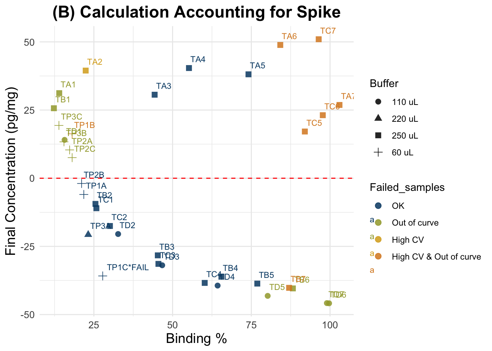
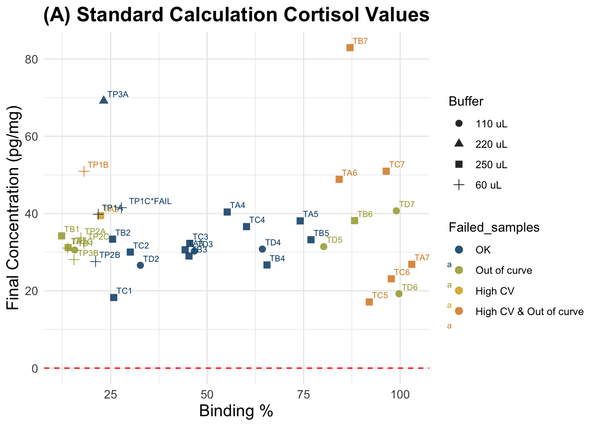
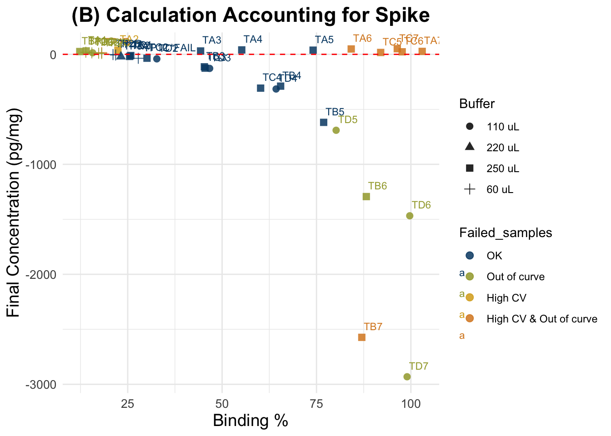

Cortisol Concentration Values, Test4
Paloma Contreras
2025-04-03
Last updated: 2025-04-03
Checks: 6 1
Knit directory:
HairCort-Evaluation-Nist2020/
This reproducible R Markdown analysis was created with workflowr (version 1.7.1). The Checks tab describes the reproducibility checks that were applied when the results were created. The Past versions tab lists the development history.
The R Markdown file has unstaged changes. To know which version of
the R Markdown file created these results, you’ll want to first commit
it to the Git repo. If you’re still working on the analysis, you can
ignore this warning. When you’re finished, you can run
wflow_publish to commit the R Markdown file and build the
HTML.
Great job! The global environment was empty. Objects defined in the global environment can affect the analysis in your R Markdown file in unknown ways. For reproduciblity it’s best to always run the code in an empty environment.
The command set.seed(20241016) was run prior to running
the code in the R Markdown file. Setting a seed ensures that any results
that rely on randomness, e.g. subsampling or permutations, are
reproducible.
Great job! Recording the operating system, R version, and package versions is critical for reproducibility.
Nice! There were no cached chunks for this analysis, so you can be confident that you successfully produced the results during this run.
Great job! Using relative paths to the files within your workflowr project makes it easier to run your code on other machines.
Great! You are using Git for version control. Tracking code development and connecting the code version to the results is critical for reproducibility.
The results in this page were generated with repository version ca6c804. See the Past versions tab to see a history of the changes made to the R Markdown and HTML files.
Note that you need to be careful to ensure that all relevant files for
the analysis have been committed to Git prior to generating the results
(you can use wflow_publish or
wflow_git_commit). workflowr only checks the R Markdown
file, but you know if there are other scripts or data files that it
depends on. Below is the status of the Git repository when the results
were generated:
Ignored files:
Ignored: .DS_Store
Ignored: .RData
Ignored: .Rhistory
Ignored: analysis/.DS_Store
Ignored: analysis/.Rhistory
Ignored: data/.DS_Store
Ignored: data/Test3/.DS_Store
Ignored: data/Test4/.DS_Store
Unstaged changes:
Modified: analysis/ELISA_Analysis_FinalVals_test4.Rmd
Modified: analysis/ELISA_Analysis_RawVals_test4.Rmd
Modified: analysis/ELISA_Calc_FinalVals_test4.Rmd
Modified: data/Test4/Data_cort_values_methodA.csv
Modified: data/Test4/Data_cort_values_methodB.csv
Modified: data/Test4/Data_cort_values_methodC.csv
Note that any generated files, e.g. HTML, png, CSS, etc., are not included in this status report because it is ok for generated content to have uncommitted changes.
These are the previous versions of the repository in which changes were
made to the R Markdown
(analysis/ELISA_Calc_FinalVals_test4.Rmd) and HTML
(docs/ELISA_Calc_FinalVals_test4.html) files. If you’ve
configured a remote Git repository (see ?wflow_git_remote),
click on the hyperlinks in the table below to view the files as they
were in that past version.
| File | Version | Author | Date | Message |
|---|---|---|---|---|
| Rmd | ca6c804 | Paloma | 2025-04-03 | new calc final vals |
| html | ca6c804 | Paloma | 2025-04-03 | new calc final vals |
| Rmd | 528855b | Paloma | 2025-04-03 | new_calc |
| html | 528855b | Paloma | 2025-04-03 | new_calc |
Summary
Cortisol value calculations
| Min. | 1st Qu. | Median | Mean | 3rd Qu. | Max. | NA’s | |
|---|---|---|---|---|---|---|---|
| A) Standard Method | 0.4142 | 1.9653 | 7.5533 | 14.1906 | 28.0667 | 50.933 | 3 |
| B) Spike-Corrected Method | -45.870 | -31.922 | -1.929 | -9.444 | 7.553 | 30.780 | 3 |
| C) Standard, but simplified equation | 0.4142 | 1.9653 | 7.5533 | 14.1906 | 28.0667 | 50.9333 | 3 |
| D) Spike-Corrected (divided by two) | 0.2335 | 1.5067 | 6.7184 | 9.7699 | 17.3683 | 32.2815 | 3 |
Results:
Intra-assay CV: 14.5%
Intra-assay CV after removing low quality samples: 10%
Inter-assay CV: 21%
(Bindings for 20mg sample diluted in 250 uL, no spike: 64.8% and 48% in test3 and test4, respectively)
Conclusions:
Concerns: Overall quality of the plate is not great, but serial dilusions show clear parallelism and standards have values within the expected
Cortisol concentration calculations
# define volume of methanol used for cortisol extraction
# vol added / vol recovered (mL)
extraction <- 1/0.750
# set reading value of spike (std1, 0.333 ug/dL),
# and transforming to ug.dL
std <- (3191+3228)/2
std.r <- (std/10000)
std[1] 3209.5std.r[1] 0.32095# according to chatgpt, the spike's contribution is
# 1600 pg/mL, which is very similar to half of the reading for std 1 :]Loading files and transforming units, including low quality data
df <- read.csv(file.path(data_path,"Data_QC_flagged.csv"))
kable(tail(df))| Wells | Sample | Category | Weight_mg | Buffer_nl | Spike | SpikeVol_uL | Dilution | Vol_in_well.tube_uL | Raw.OD | Binding.Perc | Conc_pg.ml | Ave_Conc_pg.ml | CV.Perc | SD | SEM | CV_categ | Binding.Perc_categ | Failed_samples | |
|---|---|---|---|---|---|---|---|---|---|---|---|---|---|---|---|---|---|---|---|
| 77 | G11 | TP3A | P | 12 | 220 | 1 | 25 | 1 | 50 | 0.258 | 23.2 | 2800 | 2792 | 0.391 | 10.9 | 7.71 | NA | NA | NA |
| 78 | H11 | TP3A | P | 12 | 220 | 1 | 25 | 1 | 50 | 0.259 | NA | 2785 | NA | NA | NA | NA | NA | NA | NA |
| 79 | A12 | TP3B | P | 12 | 60 | 1 | 25 | 1 | 50 | 0.195 | 15.5 | 4084 | 4210 | 4.230 | 178.0 | 126.00 | NA | UNDER 20% binding | UNDER 20% binding |
| 80 | B12 | TP3B | P | 12 | 60 | 1 | 25 | 1 | 50 | 0.186 | NA | 4336 | NA | NA | NA | NA | NA | NA | NA |
| 81 | C12 | TP3C | P | 12 | 60 | 1 | 25 | 1 | 50 | 0.186 | 13.9 | 4336 | 4661 | 9.870 | 460.0 | 325.00 | NA | UNDER 20% binding | UNDER 20% binding |
| 82 | D12 | TP3C | P | 12 | 60 | 1 | 25 | 1 | 50 | 0.166 | NA | 4986 | NA | NA | NA | NA | NA | NA | NA |
# remove outlier
#df<- df[(df$Sample != "TP3A"),]
# Creating variables in indicated units
# dilution (buffer)
df$Buffer_ml <- c(df$Buffer_nl/1000)
# remove unnecessary information
data <- df %>%
dplyr::select(Wells, Sample, Category, Binding.Perc, Ave_Conc_pg.ml, Weight_mg, Buffer_ml, Spike, SpikeVol_uL, Dilution, Vol_in_well.tube_uL, Failed_samples)
kable(tail(data, 10))| Wells | Sample | Category | Binding.Perc | Ave_Conc_pg.ml | Weight_mg | Buffer_ml | Spike | SpikeVol_uL | Dilution | Vol_in_well.tube_uL | Failed_samples | |
|---|---|---|---|---|---|---|---|---|---|---|---|---|
| 73 | C11 | TP2B | P | 21.1 | 3101 | 9 | 0.06 | 1 | 25 | 1 | 50 | NA |
| 74 | D11 | TP2B | P | NA | NA | 9 | 0.06 | 1 | 25 | 1 | 50 | NA |
| 75 | E11 | TP2C | P | 18.1 | 3634 | 9 | 0.06 | 1 | 25 | 1 | 50 | UNDER 20% binding |
| 76 | F11 | TP2C | P | NA | NA | 9 | 0.06 | 1 | 25 | 1 | 50 | NA |
| 77 | G11 | TP3A | P | 23.2 | 2792 | 12 | 0.22 | 1 | 25 | 1 | 50 | NA |
| 78 | H11 | TP3A | P | NA | NA | 12 | 0.22 | 1 | 25 | 1 | 50 | NA |
| 79 | A12 | TP3B | P | 15.5 | 4210 | 12 | 0.06 | 1 | 25 | 1 | 50 | UNDER 20% binding |
| 80 | B12 | TP3B | P | NA | NA | 12 | 0.06 | 1 | 25 | 1 | 50 | NA |
| 81 | C12 | TP3C | P | 13.9 | 4661 | 12 | 0.06 | 1 | 25 | 1 | 50 | UNDER 20% binding |
| 82 | D12 | TP3C | P | NA | NA | 12 | 0.06 | 1 | 25 | 1 | 50 | NA |
dim(data)[1] 82 12# remove duplicates
data.og <- data[!is.na(data$Binding.Perc), ](A) Standard Calculation
Formula:
((A/B) * (C/D) * E * 10,000) = F
- A = μg/dl from assay output;
- B = weight (in mg) of hair subjected to extraction;
- C = vol. (in ml) of methanol added to the powdered hair;
- D = vol. (in ml) of methanol recovered from the extract and subsequently dried down;
- E = vol. (in ml) of assay buffer used to reconstitute the dried extract;
- F = final value of hair CORT Concentration in pg/mg.
##################################
##### Calculate final values #####
##################################
# Transform to μg/dl from assay output
data$Ave_Conc_ug.dL <- c(data$Ave_Conc_pg.ml/10000)
data$Final_conc_pg.mg <- c(
((data$Ave_Conc_ug.dL) / data$Weight_mg) * # A/B *
extraction * # C/D *
data$Buffer_ml * 10000 ) # E * 10000
data <- data[order(data$Sample),]
write.csv(data, file.path(data_path, "Data_cort_values_methodA.csv"), row.names = F)
# summary for all samples
summary(data$Final_conc_pg.mg) Min. 1st Qu. Median Mean 3rd Qu. Max. NA's
0.4142 1.9932 7.5643 15.6132 29.4367 68.2489 44 kable(tail(data, 7))| Wells | Sample | Category | Binding.Perc | Ave_Conc_pg.ml | Weight_mg | Buffer_ml | Spike | SpikeVol_uL | Dilution | Vol_in_well.tube_uL | Failed_samples | Ave_Conc_ug.dL | Final_conc_pg.mg | |
|---|---|---|---|---|---|---|---|---|---|---|---|---|---|---|
| 76 | F11 | TP2C | P | NA | NA | 9 | 0.06 | 1 | 25 | 1 | 50 | NA | NA | NA |
| 77 | G11 | TP3A | P | 23.2 | 2792 | 12 | 0.22 | 1 | 25 | 1 | 50 | NA | 0.2792 | 68.24889 |
| 78 | H11 | TP3A | P | NA | NA | 12 | 0.22 | 1 | 25 | 1 | 50 | NA | NA | NA |
| 79 | A12 | TP3B | P | 15.5 | 4210 | 12 | 0.06 | 1 | 25 | 1 | 50 | UNDER 20% binding | 0.4210 | 28.06667 |
| 80 | B12 | TP3B | P | NA | NA | 12 | 0.06 | 1 | 25 | 1 | 50 | NA | NA | NA |
| 81 | C12 | TP3C | P | 13.9 | 4661 | 12 | 0.06 | 1 | 25 | 1 | 50 | UNDER 20% binding | 0.4661 | 31.07333 |
| 82 | D12 | TP3C | P | NA | NA | 12 | 0.06 | 1 | 25 | 1 | 50 | NA | NA | NA |
dim(data)[1] 82 14(B) Accounting for Spike
We followed the procedure described in Nist et al. 2020:
“Thus, after pipetting 25μL of standards and samples into the appropriate wells of the 96-well assay plate, we added 25μL of the 0.333ug/dL standard to all samples, resulting in a 1:2 dilution of samples. The remainder of the manufacturer’s protocol was unchanged. We analyzed the assay plate in a Powerwave plate reader (BioTek, Winooski, VT) at 450nm and subtracted background values from all assay wells. In the calculations, we subtracted the 0.333ug/dL standard reading from the sample readings. Samples that resulted in a negative number were considered nondetectable. We converted cortisol levels from ug/dL, as measured by the assay, to pg/mg—based on the mass of hair collected and analyzed using the following formula:
A/B * C/D * E * 10,000 * 2 = F
where - A = μg/dl from assay output; - B = weight (in mg) of collected hair; - C = vol. (in ml) of methanol added to the powdered hair; - D = vol. (in ml) of methanol recovered from the extract and subsequently dried down; - E = vol. (in ml) of assay buffer used to reconstitute the dried extract; 10,000 accounts for changes in metrics; 2 accounts for the dilution factor after addition of the spike; and - F = final value of hair cortisol concentration in pg/mg”
dSpike <- data
##################################
##### Calculate final values #####
##################################
dSpike$Final_conc_pg.mg <-
ifelse(
dSpike$Spike == 1, ## Only spiked samples
((dSpike$Ave_Conc_ug.dL - (std.r)) / # (A-spike) / B
dSpike$Weight_mg)
* extraction * # C / D
dSpike$Buffer_ml * 10000 * 2, # E * 10000 * 2
dSpike$Final_conc_pg.mg
)
write.csv(dSpike, file.path(data_path, "Data_cort_values_methodB.csv"), row.names = F)
# summary for all samples
summary(dSpike$Final_conc_pg.mg) Min. 1st Qu. Median Mean 3rd Qu. Max. NA's
-45.870 -31.013 -3.944 -9.733 7.552 30.780 44 dSpikeSub <- data[c(data$Spike == 0), ]
summary(dSpikeSub$Final_conc_pg.mg) Min. 1st Qu. Median Mean 3rd Qu. Max. NA's
0.4142 0.8400 2.3493 7.7984 11.9733 30.7800 17 kable(tail(dSpike, 10))| Wells | Sample | Category | Binding.Perc | Ave_Conc_pg.ml | Weight_mg | Buffer_ml | Spike | SpikeVol_uL | Dilution | Vol_in_well.tube_uL | Failed_samples | Ave_Conc_ug.dL | Final_conc_pg.mg | |
|---|---|---|---|---|---|---|---|---|---|---|---|---|---|---|
| 73 | C11 | TP2B | P | 21.1 | 3101 | 9 | 0.06 | 1 | 25 | 1 | 50 | NA | 0.3101 | -1.928889 |
| 74 | D11 | TP2B | P | NA | NA | 9 | 0.06 | 1 | 25 | 1 | 50 | NA | NA | NA |
| 75 | E11 | TP2C | P | 18.1 | 3634 | 9 | 0.06 | 1 | 25 | 1 | 50 | UNDER 20% binding | 0.3634 | 7.546667 |
| 76 | F11 | TP2C | P | NA | NA | 9 | 0.06 | 1 | 25 | 1 | 50 | NA | NA | NA |
| 77 | G11 | TP3A | P | 23.2 | 2792 | 12 | 0.22 | 1 | 25 | 1 | 50 | NA | 0.2792 | -20.411111 |
| 78 | H11 | TP3A | P | NA | NA | 12 | 0.22 | 1 | 25 | 1 | 50 | NA | NA | NA |
| 79 | A12 | TP3B | P | 15.5 | 4210 | 12 | 0.06 | 1 | 25 | 1 | 50 | UNDER 20% binding | 0.4210 | 13.340000 |
| 80 | B12 | TP3B | P | NA | NA | 12 | 0.06 | 1 | 25 | 1 | 50 | NA | NA | NA |
| 81 | C12 | TP3C | P | 13.9 | 4661 | 12 | 0.06 | 1 | 25 | 1 | 50 | UNDER 20% binding | 0.4661 | 19.353333 |
| 82 | D12 | TP3C | P | NA | NA | 12 | 0.06 | 1 | 25 | 1 | 50 | NA | NA | NA |
(C) Skip unit transformation
##################################
##### Calculate final values #####
##################################
datac <- data
datac$Final_conc_pg.mg <- c(
(datac$Ave_Conc_pg.ml / datac$Weight_mg) * # A/B *
extraction * # C/D *
datac$Buffer_ml) # E
datac <- datac[order(datac$Sample),]
write.csv(datac, file.path(data_path, "Data_cort_values_methodC.csv"), row.names = F)
# summary for all samples
summary(datac$Final_conc_pg.mg) Min. 1st Qu. Median Mean 3rd Qu. Max. NA's
0.4142 1.9932 7.5643 15.6132 29.4367 68.2489 44 (D) Account for Spike contribution (uses vol. of spike, conc. of spike, and total reconstit. vol.)
Spike contribution (pg/mL) = (Vol. spike (mL) x Conc. spike (pg/mL) ) / Vol. reconstitution (mL) or total vol. in well (50uL) (depending on where the spike was added)
# Calculate contribution of spike according to the different volumes in which it was added
# Consider that contribution of spike in serial dilutions gets smaller
# Vol. of spike transformed to mL
data$SpikeVol_ml <- data$SpikeVol_uL/1000
# Concentration of the spike:
std[1] 3209.5# Vol. reconstitution (mL) is the total volume in tube or well (sample + spike), after adding spike.
# transform to mL
data$Vol_in_well.tube_ml <- data$Vol_in_well.tube_uL/1000
##( Spike vol. x Spike Conc.)
## ------------------------ / dilution = Spike contribution
## Total vol.
# Cortisol added by spike in wells: 0.0025 mL x 3200 pg/mL = 80 pg
# Calculate cort contribution of spike to each sample
data$Spike.cont_pg.mL <- (((data$SpikeVol_ml * std ) / # Volume of spike * Spike concentration
data$Vol_in_well.tube_ml) / # divided by the total volume (spike + sample)
data$Dilution) # resulting number changes depending on the dilution
dSpiked <- data
##################################
##### Calculate final values #####
##################################
dSpiked$Final_conc_pg.mg <-
ifelse(
dSpiked$Spike == 1, ## Only spiked samples
((dSpiked$Ave_Conc_pg.ml - dSpiked$Spike.cont_pg.mL) / # (A - spike) / B
dSpiked$Weight_mg)
* extraction * # C / D
dSpiked$Buffer_ml, # E *
dSpiked$Final_conc_pg.mg
)
write.csv(dSpiked, file.path(data_path, "Data_cort_values_methodD.csv"), row.names = F)
# summary for all samples
summary(dSpiked$Final_conc_pg.mg) Min. 1st Qu. Median Mean 3rd Qu. Max. NA's
0.2335 1.6157 7.0685 10.2765 17.8704 32.2815 44 kable(tail(dSpiked[!is.na(dSpiked$Final_conc_pg.mg) , c("Sample", "Final_conc_pg.mg", "Ave_Conc_pg.ml", "Spike.cont_pg.mL", "Binding.Perc", "Weight_mg", "Buffer_ml", "SpikeVol_uL", "Dilution", "Vol_in_well.tube_uL")],20))| Sample | Final_conc_pg.mg | Ave_Conc_pg.ml | Spike.cont_pg.mL | Binding.Perc | Weight_mg | Buffer_ml | SpikeVol_uL | Dilution | Vol_in_well.tube_uL | |
|---|---|---|---|---|---|---|---|---|---|---|
| 43 | TC4 | 2.1748485 | 618.00 | 291.77273 | 60.2 | 50 | 0.25 | 25 | 1 | 275 |
| 45 | TC5 | 0.9633333 | 144.50 | 291.77273 | 92.0 | 50 | 0.25 | 25 | 1 | 275 |
| 47 | TC6 | 0.6499333 | 97.49 | 291.77273 | 97.7 | 50 | 0.25 | 25 | 1 | 275 |
| 49 | TC7 | 0.7166667 | 107.50 | 291.77273 | 96.4 | 50 | 0.25 | 25 | 1 | 275 |
| 51 | TD1 | 18.7971667 | 4168.00 | 1604.75000 | 15.7 | 20 | 0.11 | 110 | 1 | 220 |
| 53 | TD2 | 7.4185833 | 1814.00 | 802.37500 | 32.7 | 20 | 0.11 | 110 | 2 | 220 |
| 55 | TD3 | 4.6332917 | 1033.00 | 401.18750 | 46.7 | 20 | 0.11 | 110 | 4 | 220 |
| 57 | TD4 | 2.3797125 | 525.10 | 200.59375 | 64.3 | 20 | 0.11 | 110 | 8 | 220 |
| 59 | TD5 | 1.2298229 | 268.00 | 100.29688 | 80.2 | 20 | 0.11 | 110 | 16 | 220 |
| 61 | TD6 | 0.2335048 | 81.99 | 50.14844 | 99.7 | 20 | 0.11 | 110 | 32 | 220 |
| 63 | TD7 | 0.4521424 | 86.73 | 25.07422 | 99.0 | 20 | 0.11 | 110 | 64 | 220 |
| 65 | TP1A | 18.4166667 | 2986.00 | 1604.75000 | 21.8 | 6 | 0.06 | 25 | 1 | 50 |
| 67 | TP1B | 29.5366667 | 3820.00 | 1604.75000 | 18.1 | 6 | 0.06 | 25 | 1 | 50 |
| 69 | TP1C | 8.4966667 | 2242.00 | 1604.75000 | 27.8 | 6 | 0.06 | 25 | 1 | 50 |
| 71 | TP2A | 19.4511111 | 3793.00 | 1604.75000 | 17.3 | 9 | 0.06 | 25 | 1 | 50 |
| 73 | TP2B | 13.3000000 | 3101.00 | 1604.75000 | 21.1 | 9 | 0.06 | 25 | 1 | 50 |
| 75 | TP2C | 18.0377778 | 3634.00 | 1604.75000 | 18.1 | 9 | 0.06 | 25 | 1 | 50 |
| 77 | TP3A | 29.0216667 | 2792.00 | 1604.75000 | 23.2 | 12 | 0.22 | 25 | 1 | 50 |
| 79 | TP3B | 17.3683333 | 4210.00 | 1604.75000 | 15.5 | 12 | 0.06 | 25 | 1 | 50 |
| 81 | TP3C | 20.3750000 | 4661.00 | 1604.75000 | 13.9 | 12 | 0.06 | 25 | 1 | 50 |
Plots
(A) Standard Calculation

(B) Accounting for Spike

(C) Simplified Standard Calculation

(D) New calculation (substract half of the spike from A)

sessionInfo()R version 4.4.3 (2025-02-28)
Platform: aarch64-apple-darwin20
Running under: macOS Sequoia 15.3.2
Matrix products: default
BLAS: /Library/Frameworks/R.framework/Versions/4.4-arm64/Resources/lib/libRblas.0.dylib
LAPACK: /Library/Frameworks/R.framework/Versions/4.4-arm64/Resources/lib/libRlapack.dylib; LAPACK version 3.12.0
locale:
[1] en_US.UTF-8/en_US.UTF-8/en_US.UTF-8/C/en_US.UTF-8/en_US.UTF-8
time zone: America/Detroit
tzcode source: internal
attached base packages:
[1] stats graphics grDevices utils datasets methods base
other attached packages:
[1] dplyr_1.1.4 paletteer_1.6.0 broom_1.0.7 ggplot2_3.5.1
[5] knitr_1.49
loaded via a namespace (and not attached):
[1] sass_0.4.9 utf8_1.2.4 generics_0.1.3 tidyr_1.3.1
[5] prismatic_1.1.2 stringi_1.8.4 digest_0.6.37 magrittr_2.0.3
[9] evaluate_1.0.1 grid_4.4.3 fastmap_1.2.0 rprojroot_2.0.4
[13] workflowr_1.7.1 jsonlite_1.8.9 whisker_0.4.1 backports_1.5.0
[17] rematch2_2.1.2 promises_1.3.0 purrr_1.0.2 fansi_1.0.6
[21] scales_1.3.0 jquerylib_0.1.4 cli_3.6.3 rlang_1.1.4
[25] munsell_0.5.1 withr_3.0.2 cachem_1.1.0 yaml_2.3.10
[29] tools_4.4.3 colorspace_2.1-1 httpuv_1.6.15 vctrs_0.6.5
[33] R6_2.5.1 lifecycle_1.0.4 git2r_0.35.0 stringr_1.5.1
[37] fs_1.6.5 pkgconfig_2.0.3 pillar_1.9.0 bslib_0.8.0
[41] later_1.3.2 gtable_0.3.6 glue_1.8.0 Rcpp_1.0.13-1
[45] xfun_0.49 tibble_3.2.1 tidyselect_1.2.1 rstudioapi_0.17.1
[49] farver_2.1.2 htmltools_0.5.8.1 rmarkdown_2.29 labeling_0.4.3
[53] compiler_4.4.3